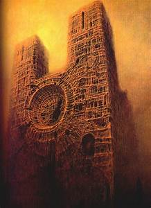
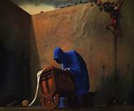
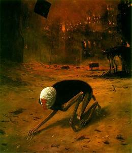

A Table Of His Paintings
| Beksinski | Imaginary name | painted? | Period |
|---|---|---|---|
| Skin dam | 1960-1985 | Fantastic | |
| Death robe | 1960-1985 | Fantastic | |
| Kissing | 1960-1985 | Fantastic | |
| It really is a shame he never named them | |||
Skin Dam
This is an unsettling painting of the famous church Notre Dam constructed out flesh. Beksisnski often used religious imagery and structures painted in a medieval style. It is impossible to really know what he wanted to convey with his paintings so all my assumptions are my own oppinion.
Death robe
A disturbing feature of his paintings is that the blue you see is in fact a pigment also stained the walls of the gas chambers. This color is from cyanide and hence the robed figure takes on a whole new meaning. The paint is called Prussian blue.
Kissing
Beksinski painted many emaciated figures during his time some in erotic positions. Often the figures in his paintings look necrotic and not fully alive this could be linked to his own personal experiences. Many of his paintings follow this erotic theme and it has been prevelant in his art work from day one, starting with his photography.
Creature
This painting lends more to his gloomy and apocolytic atmosphere that became his staple, the beast walkes through the destroyed street with a bandaged head. For me, this is an uncomfortable scene that makes me a little upset.